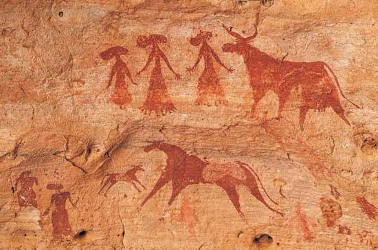
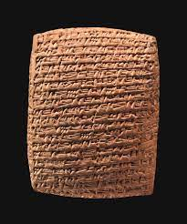
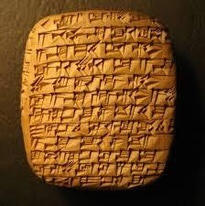
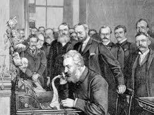
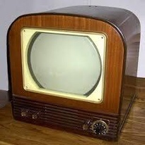

WHAT IS MEDIA?
Media is described as channel or ways we use to transmit or deliver an information and data. Media also act as channels of information and knowledge through which citizens communicate with each other and make informed decisions, Media can be traditional and can be modernize media which we call New Media. Traditional Media are those that transmit information without the use of the internet or any digital platform (i.e. analog technology like airwaves, the Television, Radio, News Paper, and others). New Media on the other hand, are those that transmit information by the use of internet (i.e. Social media platform, you named it).
“HUMANS ARE SOCIAL
BEINGS WHO WANT
AND NEED TO COMMUNICATE
WITH EACH OTHER,
EVEN INFANTS TRY TO COMMUNICATE
WITH THEIR CAREGIVERS
USING NON-VERBAL CUES.”

Dr. Kathryn Barnard
Before Common Era to Common Era timeline
_____________
IMPORTANT INFO!
THE HISTORICAL EVENTS IS DIVIDED INTO 4 AGES:
PRE-INDUSTRIAL AGE
IT WAS BEFORE AND DURING YEAR 1700'S PEOPLE HAD LEARNED OR DISCOVERED FIRE AND DEVELOPED A PAPER FROM PLANTS, AND FORGED WEAPONS WITH STONE, BRONZE, COPPER, AND IRON.
INDUSTRIAL AGE
IN YEAR 1700'S TO 1930'S PEOPLE USED THE POWER OF STEAM, DEVELOPED MACHINE TOOLS, ESTABLISHED IRON, PRODUCTION, AND THE MANUFACTURING OF VARIOUS PRODUCTS.
ELECTRONICAL AGE
AFTER 1930'S TO 1980'S THE INVENTION OF THE TRANSISTOR USHERED IN THE ELECTRONIC AGE. PEOPLE HARNESSED THE POWER OF TRANSISTORS.INFORMATION AGE
FINALLY IN 20-21ST CENTURY THE INTERNET PAVE THE WAY FOR FASTER COMMUNICATION AND THE CREATION OF THE WORK OF THE SOCIAL NETWORK.
PRE-INDUSTRIAL AGE(before 1700s)
Humans started writing around 3200 BCE or Before Common Era. It arose from the need to indicate quantity or numbers for recordkeeping. To record other things and concepts, Therefore early humans decide to began drawing and carving on stones, caves and animal skins. CAVE PAINTINGS, PICTOGRAPHS AND PETROGLYPES WAS DISCOVERED AND DEVELOPED DURING THE YEAR (3500 BCE).
CUNEFORM IN MESSOPOTAMIA (3200)
CUNEFORM
Humans started writing at around 3,200 BCE(Before Common
Era) in the Messopotamia and 600 BCE in Mesoamerica. Words
for "finger" are found in several ancient languages for numbers
which suggest that humans first counted and communicated
quantity with their fingers. This then evolved into cutting
notches on tree barks or stones to represent numbers
or symbols as a letter.
PAPYRUS IN EGYPT (2500 BCE)
Time pass by early humans discovered and developed different kind of stuff which leads us, on what we have right now.
CLAY TABLETS IN MESSOPOTAMIA (2400 BCE)

Acta Diurna (130 BC)

Dibao In China (2nd Century BC)
Codex In Mayan Region (5th Century AD)

Printing Press Using Woodblock (220 AD)
INDUSTRIAL AGE (1700-1930s)

PRINTING PRESS FOR
THE MASS PRODUCTION
(19TH CENTURY)

NEWSPAPER PRODUCTION (1600)

LONDON GAZETTE (1665)
TYPEWRITER(1800)

SOUND FILMS (1849)
TELEPHONE (1876)
ELECTRONIC AGE (1930-1980)
TELEVISION (EARLY TO MID 1940)

LARGE ELECTRONIC COMPUTERS (LATE 1940- EARLY 1950)
TRANSISTOR RADIO (1950)
UNIVAC (1951)
EDSAC (1997)

MAINFRAME COMPUTER (1960)

PERSONAL COMPUTER (1960)

HEWLETT-PACKARD 9100A (1960)

APPLE 1

OVERHEAD PROJECTOR (LATE 1950 AND EALY 1960)

LCP PROJECTORS (MID TO LATE 1980)
INFORMATION AGE (1900-2000)
Web Browsers (New Media)
WORLD WIDE WEB (1990)
MOSAIC (1993)

INTERNET EXPLORER (1995)
OPERA (1996)
SAFARI (2003)
FIREFOX (2004)

GOOGLE CHROME (2008)
Search Engine (New Media)

GOOGLE SEARCH (1997)

AHOO SEARCH (1995)
BING (2009)
Blogging Sites (New Media)

OPEN DIARY(1998)
OPEN DIARY(1998)
LIVEJOURNAL(1999)
XANGA(2000)
WORDPRESS(2003)
Social Networks (New Media)
FRIENDSTER(1997)
LINKEDIN(2002)
MYSPACE(2003)
MULTIPLY(2004)
FACEBOOK(2004)

GOOGLEPLUS(2011)
Micro Blogging Sites (New Media)